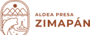
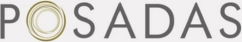
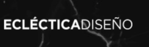
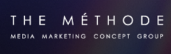
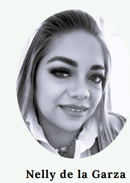

De la información al significado
Estudios para comprender mercados, audiencias y tendencias que impactan el crecimiento de las marcas.
Diagnóstico de posicionamiento, reputación y desempeño de comunicación para orientar decisiones estratégicas.
Creación o evolución de marcas desde su narrativa, identidad conceptual y posicionamiento en el mercado.
Desarrollo estratégico de nuevos conceptos de producto, servicio, destinos o experiencias.
Transformación de insights en planes de acción para marketing, comunicación y desarrollo comercial.
Selecciona un paso para conocer cómo convertimos decisiones en impacto medible.





Estratega de marcas y conocedora experta del comportamiento del consumidor, con más de 20 años de experiencia en sectores como hospitalidad, salud y consumo. Combina pensamiento analítico con una sensibilidad creativa, capaz de traducir datos en decisiones estratégicas y experiencias con significado. Su mirada busca el equilibrio entre lo funcional y lo bello, conectando negocios con personas desde un lugar auténtico y memorable.
Especialista en branding y conceptualización con más de 15 años de experiencia en la industria. Ha desarrollado marcas icónicas de hoteles, restaurantes y experiencias de bienestar, especialmente en el ámbito del lujo. Su enfoque combina intuición creativa con estrategia de negocio.
"Lo que más me apasiona es estar siempre creando cosas e ideas que conecten con las personas."
Descubre el potencial oculto de tu marca